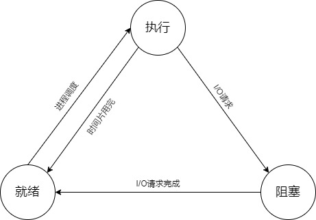

进程的三种状态
就绪状态（Ready）
进程已分配到除CPU以外的所有必要资源，只要获得处理机便可立即执行
执行状态（Running）
进程已获得处理机，其程序正在处理机上执行
阻塞状态（Blocked)
正在执行的程序，由于等待某个事件发生而无法执行时，便放弃处理机而处于阻塞状态。引起进程阻塞的原因可能是等待I/O完成、申请缓冲区不能满足、等待信号等。

为什么在转换图中没有就绪到阻塞和阻塞到执行的转换方向？
就绪状态（Ready）进程没有占用处理机，即不经过执行，其状态就不会改变；阻塞状态进程唤醒后要先进入到就绪队列，才会被调度程序选中，进入执行状态